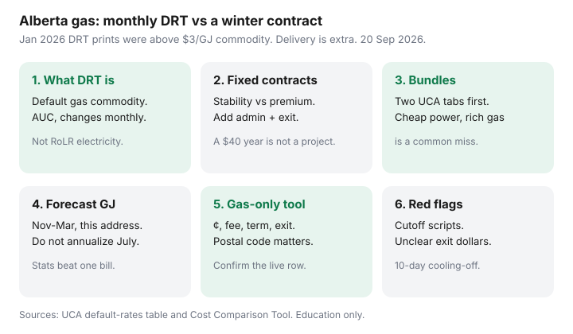

Utilities · Canada
Alberta Natural Gas: Default Rate Tariff vs Competitive Contracts for Winter Budgets
A cold snap prints a gas bill and Albertans sign a five-year ¢ they modelled on one February. Alberta natural gas Default Rate Tariff vs contract is a winter cashflow decision, not an Ontario Enbridge-only story. The Default Rate Tariff (DRT) is the AUC-approved default commodity. It moves monthly. Delivery stays with ATCO Gas, Apex, or your co-op.
Electricity’s default is the Rate of Last Resort — different product, different clock (through 31 Dec 2026). Do not let a dual-fuel pitch reprice both lines. Shop gas in the UCA tool, then enrol using the switch steps.
Disclosure: Smart thermostats are an offer type that can cut winter GJ if you will keep a schedule. Saving Optimizer may earn a commission if we later add partner links. We do not currently claim UCA, retailer, thermostat-brand, or utility partnerships. This is education — not a contract recommendation.
Key takeaways
- DRT is the default gas commodity, reviewed monthly by the AUC. It excludes billing and delivery. UCA’s 2026 table (DERS / ATCO vs Apex) ran from winter highs above $3 / GJ in January down through summer prints under $1 / GJ in May — then bounced.
- A fixed gas contract buys stability. It can also buy a premium if DRT falls, plus an exit fee if you move or chase a new promo.
- Bundled electricity + gas pitches hide fees. Compare each fuel on the UCA estimate, then decide if one logo is worth it.
- Forecast winter GJ from last January–March at this address, not from a July BBQ month. A thermostat schedule is a usage tool, not a rate.
- Door-to-door pressure and unclear exit fees are the usual miss. 10-day cooling-off exists. UCA mediation is 310-4822.
How the Default Rate Tariff is set month to month
If you never signed a gas contract, a default retailer (often Direct Energy Regulated Services in ATCO territory, or Apex’s default book in its territory) bills DRT. The Alberta Utilities Commission approves the monthly flow-through. UCA’s default-rates page (used 20 Sep 2026) publishes 2026 DRT in $/GJ by retailer/distributor column. Examples from that 2026 table:
- January 2026: DERS / ATCO about $3.331 / GJ; Apex about $3.419 / GJ.
- May 2026: about $0.936 and $0.930 / GJ.
- August 2026: DERS / ATCO North flow-through $1.729 / GJ on the DERS schedule we used; Apex column about $2.021 / GJ.
- September 2026: about $1.124 and $1.432 / GJ on the UCA table.
Those figures are commodity only. Your bill still has delivery, admin, and riders. A May DRT print is not a winter budget.

Fixed gas contracts: stability vs premium risk
A fixed ¢/GJ (or a fixed monthly “rate”) for 1–5 years is a bet that future DRT-plus-panic will cost more than today’s contract-plus-fees. It is not automatically cheaper. Model:
- Last 12 months of GJ × (contract ¢ − a conservative DRT average you can live with).
- Add monthly admin on the contract side. A $8 fee on a tight condo can erase a 20 ¢/GJ “win.”
- Add the exit fee × the chance you move or refinance before term-end.
If the honest year is $40, stay on DRT and fix the attic. If you cannot sleep when January prints $3.40 / GJ commodity, a clean fixed with a small exit may be a sleep product — price it as one.
Bundled electricity+gas pitches—when bundling helps or hides fees
One bill is convenient. It is also how a cheap RoLR-beating power ¢ arrives tied to a rich gas ¢, or the reverse. UCA lets you filter gas-only and electricity-only. Do that first. A bundle helps when both annual columns win after fees and you like one call centre. It hides fees when the “$50 bill credit” applies once and the gas admin is permanent.
Electricity default through 31 Dec 2026 is RoLR at about 12 ¢ energy — see RoLR vs fixed. Do not let a gas conversation silently enrol you in a 36-month power term.
Winter usage forecasting before you lock a term
Pull November–March GJ for two winters if you have them. A heat-pump hybrid, a new baby, a WFH year, or a renovation changes the series. Labelled sketch: 15 GJ in January at $3.33 commodity is about $50 of energy before delivery — not a crisis by itself, and not a July number you can annualize by multiplying by 12.
Usage levers that actually move GJ: a schedule you keep, a filter you change, and air sealing. A smart thermostat is worth more if you will use remote setbacks or a lockout on a dual-fuel setup — the break-even is here. Equal billing on gas is cashflow; it does not make DRT cheaper.
Using UCA to compare gas-only offers in your postal code
| Field | Why it matters | Winter-budget note |
|---|---|---|
| Energy ¢/GJ | The shoppable commodity | Compare to this month’s DRT and to last January’s DRT |
| Admin / monthly fee | Fixed dollars | Low-use summers make fees look huge |
| Term and renewal | How long you are stuck | A move in month 14 needs an exit number |
| Exit fee | Flat, declining, or months × $X | Read dollars, not “reasonable” |
| Bundle flag | Power riding along | Price electricity on its own UCA tab |
Call to confirm the row still exists. Then enrol using the switch checklist — 10-day cooling-off, 10–90 day flip, keep paying DRT until the date.
Red flags: door-to-door pressure and unclear exit fees
A clipboard that says your furnace will be cut off unless you leave DRT today is a script. Default gas is legal. You can leave DRT any time without an exit fee. Competitive contracts are the ones with cooling-off and exit clauses.
- No written ¢, fee, and exit in dollars — no signature.
- A “government program” door pitch is a known pattern. UCA and the AUC do not enrol you on a porch.
- If the bill and the contract disagree, UCA mediation (310-4822) is the next call, not a second porch visit.
Sources & date stamps
- UCA, Default rates — 2026 DRT $/GJ table by DERS/ATCO and Apex columns (used 20 Sep 2026).
- UCA, Cost Comparison Tool — gas-only filter; DRT vs competitive; confirm rows with the retailer.
- DERS ATCO Gas North Rate G1 / Rider F — example August 2026 flow-through $1.729/GJ (AUC Decision 30807-D01-2026 context).
- UCA, How to switch energy retailers — 10-day cooling-off; 10–90 day switch.
- UCA 310-4822 — mediation for billing and contract disputes.
Frequently asked questions
Is the Default Rate Tariff the same as the Rate of Last Resort?
No. DRT is the default natural-gas commodity and can change monthly. RoLR is the default electricity energy price through 31 December 2026. Shop them as two lines.
Do I have to leave DRT before winter?
No. You can stay. You can also leave any time without an exit fee. Compare the UCA gas-only estimate at your GJ before you treat a January print as a command to sign.
Why was January DRT above $3/GJ and May under $1?
DRT is a monthly flow-through. Winter commodity prints can spike; shoulder months can print low. Annualize with 12 months of GJ, not one invoice.
Should I bundle gas with electricity?
Only if both UCA annual columns win after fees. A cheap power ¢ tied to an expensive gas ¢ is a common miss.
Does a smart thermostat change DRT?
No. It can change GJ if you keep a schedule. The rate is still DRT or your contract ¢. Delivery does not move.